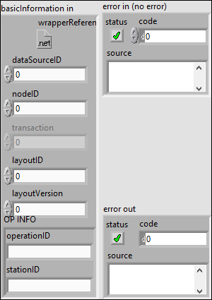

Funcion dedicada al cierre de la conexión con el servidor esperando a las respuestas que hayan pendientes.
Controles:
- error in (no error): Entrada de errores, si hay error la función no hará nada.
- basinInformation in: Cluster con los datos basicos para hacer la función.
Indicadores:
- error out: error producido durante la ejecución o el error de entrada.
- basicInformation out: Cluster con la información basica (imposible realizar un open)


Función que abre un canal de comunicación con el servidor
Controles:
- basicInformation in: Cluster con la información necesaria para crear el canal
- error in (no error): Entrada de errores
Indicadores:
- basicInformation out: cluster preparado para realizar peticiones al servidor
- error out: error producido durante el uso de la función

Función que crea la instancia del subsistema Wrapper, inicializando sus atributos.
Controles:
- config: estructura de datos que inlcuye todo lo necesario para contruir el Wrapper.
- error in: entrada de error
Indicadores:
- basicInformation out: cluster construido con lo necesario para hacer peticiones.
- error out: Salida de errores

Función que elimina la referencia de un objeto de .NET.
Controles:
- basicInformation in: cluster que incluye el objeto
- error in (no error): entrada de errores
Indicadores:
- error out: Error producido con el borrado de la referencio o producido con anterioridad.

Contiene las funciones basicas para la gestion del Wrapper (contructor, open, close, delete)